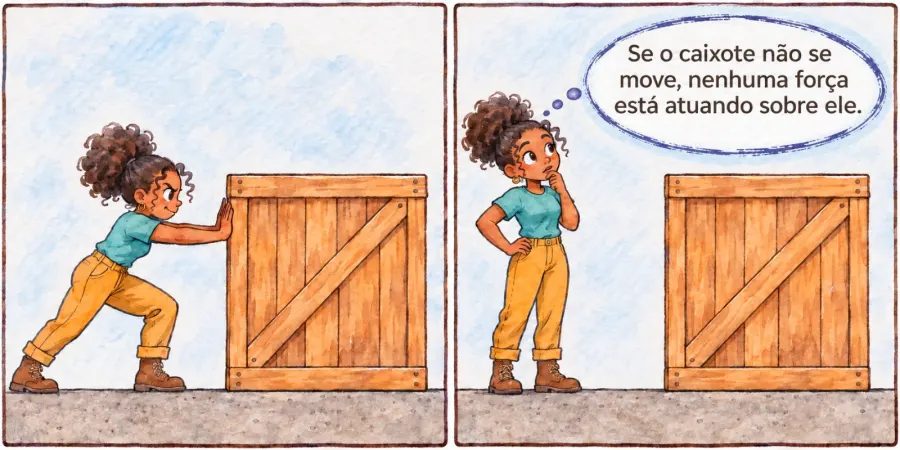

Não consolidado
Usa ideias intuitivas incorretas. Precisa de retomada.
Avaliação formativa · Ensino Médio · Física
A Horizon acompanha o aluno antes e depois de cada aula e mostra ao professor o que a turma ainda não entendeu e por quê, com relatórios prontos em minutos, não em horas de correção.
O problema
Em Física, quase todo erro de conta começa num erro de ideia. Quando o professor recebe só “certo” ou “errado”, a lacuna passa despercebida e se acumula no conteúdo seguinte.
Como funciona
A avaliação acontece junto com a aula, todos os dias, e não só no dia da prova.
O que o aluno já sabe?
Antes da aula, o aluno responde de 2 a 3 perguntas curtas sobre uma situação do dia a dia e explica o próprio raciocínio. Leva menos de 5 minutos.
A aula direcionada ao que falta.
O professor chega à aula sabendo quais ideias erradas apareceram na turma e começa por elas. O aluno estuda com aula ou vídeo focado nesses pontos.
O que mudou depois da aula?
Uma pergunta parecida com a do diagnóstico mede o avanço. A Horizon compara o antes e o depois e gera o relatório da turma e de cada aluno.
O ciclo se repete a cada aula
O método
Cada pergunta é construída sobre a taxonomia de Bloom. Não basta acertar: o aluno precisa identificar, relacionar, comparar, calcular e justificar. A Horizon procura essas ações nas palavras e nas relações lógicas que o aluno usa para explicar a resposta.

“Está certo, se fosse força ele andaria.”
D Não identifica as forças“Tem o empurrão e o atrito, e eles se anulam.”
C Identifica e compara, mas a explicação está incompleta“Empurrão e atrito se equilibram na horizontal, peso e normal na vertical. A resultante é nula, então ele continua parado.”
B Identifica, relaciona, compara e explicaTaxonomia de Bloom
níveis avaliados nas sequências de Física
Conceitos em vez de média
A média esconde lacunas: um 10 compensa um 2. A Horizon descreve cada habilidade em 4 níveis, para que aluno e professor saibam qual é o próximo passo.
Usa ideias intuitivas incorretas. Precisa de retomada.
Reconhece as grandezas, mas ainda não articula a explicação.
Explica, representa e calcula corretamente.
Transfere o conceito para situações novas.
Para quem
Professor
Respostas parecidas chegam agrupadas. Você confere uma amostra e aplica a avaliação ao grupo inteiro com um clique. A palavra final é sempre sua.
Aluno
Devolutivas claras sobre cada etapa do raciocínio e indicação do que estudar em seguida.
Coordenação
Painel por turma com a evolução das habilidades e relatórios prontos para apresentar às famílias.
Respeito ao tempo do professor
A Horizon foi desenhada a partir de um limite: o tempo do professor. As perguntas vêm prontas, alinhadas à BNCC e às habilidades do ENEM. A correção é agrupada e o relatório sai sozinho.
Por que a Horizon é diferente
Bancos de questões dão o percentual de acerto. Formulários deixam a tabulação para o professor. Plataformas de vídeo não conversam com a escola. A Horizon fecha o ciclo: diagnóstico, aula e relatório do raciocínio.
| Recurso | Bancos de questões | Formulários genéricos | Plataformas de vídeo | Horizon |
|---|---|---|---|---|
| Diagnóstico antes da aula | — | parcial | — | ✓ |
| Avalia a justificativa | — | — | — | ✓ |
| Relatório por habilidade | — | — | — | ✓ |
| Pouco tempo do professor | parcial | — | ✓ | ✓ |
Veja na prática
Professores e escolas
Estamos selecionando professores de Física do Ensino Médio para um piloto de 90 dias, sem custo.
Alunos e curiosos
Responda ao diagnóstico, assista ao vídeo e veja como você evolui. Leva cerca de 20 minutos.
Quem somos
A Horizon nasceu no programa StartUCS, da Universidade de Caxias do Sul, com mentoria de Cesar Pisetta. Ela é desenvolvida por Breno Cechinato de Lima, Igor Cechinato de Lima e Rudson da Rosa Pedroso.
StartUCS · Universidade de Caxias do Sul
Perguntas frequentes
Ela substitui a ideia de avaliar só no dia da prova. A escola pode manter suas avaliações. A Horizon acompanha o aluno em todas as aulas e mostra onde ele precisa de ajuda.
Não. As sequências de perguntas, as rubricas e os erros típicos já vêm prontos.
O professor. A tecnologia só organiza e agrupa as respostas. Nenhuma avaliação é publicada sem a validação dele.
Sim. O aluno responde pelo celular e o professor vê o painel em qualquer tela.
São tratados de acordo com a LGPD e usados só para fins pedagógicos.
O piloto começa por Física. Química, Matemática e Biologia estão no plano de expansão.